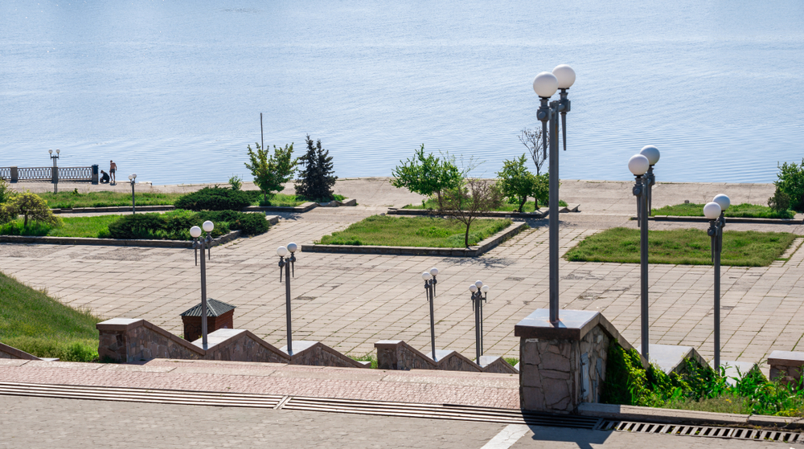

Херсон
Херсон: Місто з багатовіковою історією та культурним розмаїттям
Херсон - мальовниче місто, розташоване на півдні України, на березі Дніпра, недалеко від Чорного моря. Це одне з найстаріших міст країни, засноване у 18 столітті на місці давньогрецького поселення. Херсон славиться своєю багатовіковою історією, красивою архітектурою, культурними традиціями та природними багатствами.
Історичний шлях Херсона починається з його заснування Петром І в 1778 році як фортеця. Місто швидко розвивалося і стало одним з головних торговельних центрів півдня України. За часів Російської імперії Херсон став важливим портом і базою Чорноморського флоту. Багато історичних подій відбулися на Херсонщині, включаючи Ново-Ніколаївську битву під час Вітчизняної війни 1812 року.
Одним з головних символів Херсона є Херсонська фортеця. Ця могутня фортифікаційна споруда, побудована в 18 столітті, вважається пам'яткою архітектури національного значення. Фортеця є привабливим туристичним об'єктом та місцем, де проводяться різноманітні культурні заходи.
Крім фортеці, Херсон має багато інших архітектурних пам'яток. Одна з них - Херсонський державний університет, заснований у 1917 році, який вважається одним з найстаріших університетів на півдні України. Університет має великий внесок у розвиток освіти та науки в регіоні.
Херсон також славиться своїми музеями, які розповідають про багату історію та культуру міста. Один з найвідоміших музеїв - Херсонський обласний краєзнавчий музей, де представлені експонати з різних епох, включаючи археологічні знахідки, картини, реліквії та інше.
Природні красоти Херсона також вражають. Місто має прекрасне розташування на березі Дніпра, а також неподалік від Чорного моря. Чисті пляжі, лимани та заповідники приваблюють відпочиваючих туристів та екологів. Зокрема, у Херсонському районі розташований Національний природний парк "Асканія-Нова" - унікальний заповідник, де зберігаються рідкісні види рослин та тварин.
Херсон також славиться своєю культурною спадщиною. Місто має багату театральну та музичну сцену, де проводяться вистави, концерти та фестивалі. Тут проживають талановиті художники, письменники та музиканти, які активно сприяють розвитку місцевої культури.
Узагалі, Херсон - це місто з багатим культурним розмаїттям, де поєднуються різноманітні впливи і традиції. Тут можна відчути поєднання старовини та сучасності, національних та міжнародних впливів. Відвідування Херсона дарує незабутні враження і надихає на дослідження його багатошарової історії та культури.
> -
Перейти до другої сторінки
Перейти до третьої сторінки
Перейти до тестів
Перейти до відео